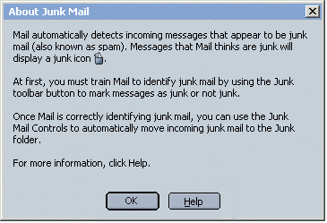
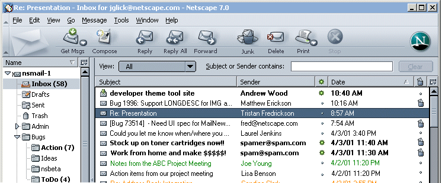
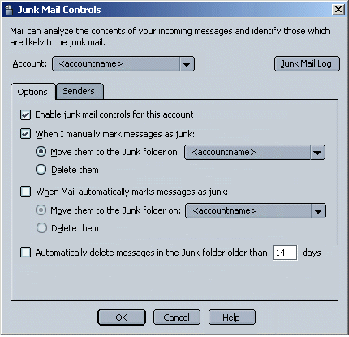
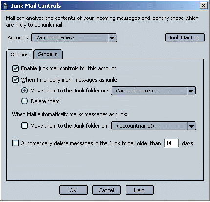
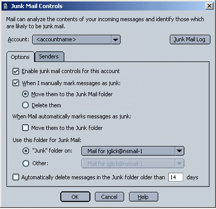
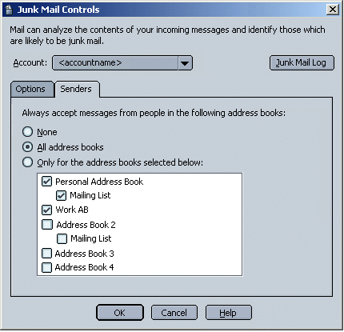
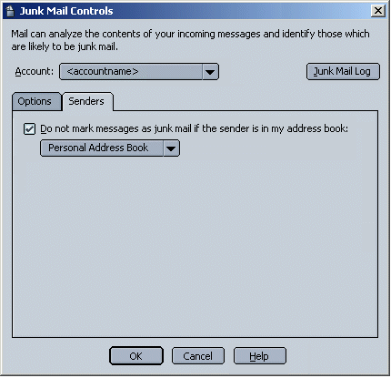
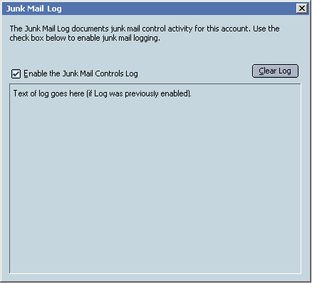
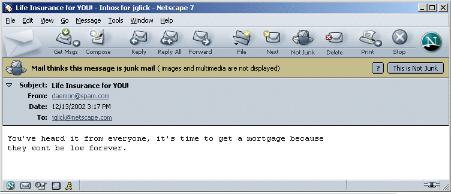
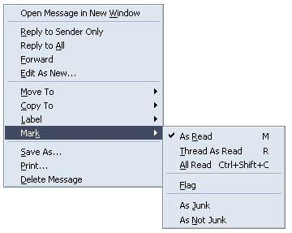

|
Buffy/Mozilla: Mail
|
UI Specification
|
|
Junk Mail Controls
|
Last
Modification:
|
Related Bugs
- 169638
- [meta] finish junk mail feature
- 179162 - better UI for marking junk mail & running junk
mail controls
- 179568 - If message is determined to be Junk, show simple html
or plain text - don't load remote images
- 180029
- running junk mail controls manually should respect
preferences
- 188934 - Junk Mail Controls: J key for "toggle junk
status"
- 191504 - potential UE issues with the classic toolbar icon for
"junk"
- 191933 - Tools->Mark Selected Messages as Junk/Not Junk
missing underlined accesskeys
- 193474
- Should automatically select message as junk if put in junk
folder
- 194273
- move to junk folder (or delete) when the user manually marks as
junk
- 194762
-per spec change menu option for running junk mail controls from
selected msgs to folder
- 194918
- Junk Mail: Menu item to empty folder of msgs marked as Junk
- 195238
- Junk toolbar button text should say "Not Junk" if junk messages
are selected
- 195244 - Make junk and filter log viewers appear
"disabled"
Summary
Goals
- Automatically identify potential junk messages
- Enable users to mark messages as junk mail.
- Enable users to select automatic actions on junk messages
- Provide useful defaults for novice users
- Provide additional options and customization for more
experienced users
Design Details
A. Menu Access
1. Main Mail Window - Tools Menu
|
Search Messages
Search Addresses
-----------------------------------------------------
Message Filters
Run Filter on Folder ---> (Flyout List of Avail
Filters)
-----------------------------------------------------
Junk Mail Controls
Run Junk Mail Controls on
Folder
Delete Mail
Marked as Junk from
Folder
------------------------------------------------------
Import...
-----------------------------------------------------
Switch Profile
Password Manager -->
Download Manager -->
-----------------------------------------------------
Web Development -->
|
- Junk Mail Controls - Opens the Junk Mail Controls
dialog.
- First Usage or JMCs not enabled - Show Descriptive dialog
only.
- Once JMCs are enabled - Show Full feature dialog.
- Run Junk Mail Controls on Selected
Folder - Messages in
folder are evaluated against Junk Mail Controls. Obeys users
settings (for example, if user wants JM moved to a folder, it
should be moved). (Changed from
Messages
to
Folder
to parallel related Filters menu item. Plus, non-advanced users
don't know how to multi-select msgs).
- Delete Mail Marked as Junk from
Selected Folder - Quick way to get rid of msgs a user
has manually marked as junk. Quick way to empty out Junk Folder
(when JM folder is the selected folder).
2. Main Mail Window - Message Menu: Mark
|
As Read
Thread as Read
All Read
---------------------
Flag
---------------------
As Junk
As Not Junk
|
B. About Junk Mail - First Usage

- Junk Mail Controls are ON by default for all
accounts.
- Junk Mail Column ON by default.
- "Junk" toolbar button is visible by default.
- The first time the user does any of the actions listed below,
the About Junk Mail dialog opens.
- Selects any of the JMC related menu items (see section
A)
- Clicks the "Junk" toolbar button
- Turns on the Junk Mail Status column
- Clicking the "?" in the Junk Mail header in a message also
opens the About Junk Mail dialog.
C. Toolbar and Thread Pane

1. Toolbar
- "Junk" toolbar button is visible by default.
- On first usage, clicking on the Junk toolbar button (or any JM
menu item, or turning on the JM column) opens the About Junk Mail
dialog (see section B).
- The toolbar button toggles as appropriate, "Junk/Not
Junk".
- When one or more messages not currently marked as junk are
selected, the toolbar button label is "Junk". Clicking button
marks selected message(s) as Junk.
- When one or more messages not currently marked as junk are
selected, the toolbar button label is "Not Junk". Clicking the
button marks selected message(s) as Not Junk.
- If more than on message is selected and some are currently
marked as junk and some are not marked as junk, the toolbar button
label is "Junk". Clicking button marks selected message(s) as
Junk.
- Toolbar button Tooltip - when it's labeled "Junk": "Mark the
selected messages as not junk". When it's labeled "Not Junk":
"Mark the selected messages as junk".
2. Thread Pane
- Junk column is on by default. User can choose to hide
column.
- Possible states: "Is Junk", "Is Not Junk".
- Icons for "Is Junk". No icon for "Is Not Junk".
- User can change state of a message from "Is Junk" to "Is Not
Junk" or vice versa, by clicking the thread pane icon or clicking
the Junk toolbar button.
- Clicking the column toggles between "Is Junk" and "Is Not
Junk"
- Tooltip for Thread Pane Icon: "Click to sort by junk mail
status".
- Default location of column: To the right of the Subject
column.
D. Junk Mail Controls Dialog
Dialog needs to be changed to tabbed
version. Some features exist already and only need wording changes.
Some features planned/discussed but not yet
implemented.
After first usage (when user will get the About Junk Mail dialog),
selecting "Junk Mail Controls" from the Tools menu opens the Junk
Mail Controls Dialog.
1. Options - Version 1 (*)

- Once a user enables JMCs, the default enabled settings
include:
- "Enable junk mail controls for this account"
- "When I manually mark messages as junk: Move them to the
Junk Folder on <current account>"
- AB white list (see "Senders" section below)
- All settings are disabled when ""Enable junk mail controls for
this account"" is not checked.
- JM Log is per account.
- When I manually mark messages as junk: Move them to the
Junk folder on <current account> -
after X seconds, message is
moved (in case user marked it in error). Only applies to manually
marked msgs.
- When I manually mark messages as junk: Delete them -
after X seconds , message is deleted
or moved to Trash (as per user's Trash model). Only applies to
manually marked msgs.
- When Mail automatically marks messages as junk: Move them
to the Junk folder on <current account> - only
applies to msgs that the JMCs have identified, not user marked
msgs.
- When Mail automatically marks messages as junk: Delete them
- only applies to msgs that the JMCs have identified, not
user marked msgs. Delete or move to Trash as
appropriate.
- Automatically delete messages in the Junk folder older than
X days - delete or move to Trash as appropriate.
- The Junk folder is flagged as a special folder and appears
grouped near to top of the folder hierarchy with the other special
folders.
Options - Version 2 (*)
Similar to Version 1 except auto identified messages can only be
moved to Junk folder.

Options - Version 3
Similar to Version 2, but user can pick any folder to be the Junk
folder. Do we want users to be able to pick any folder for this? Is
is safer to limit them to an Account specific or Local Junk folder
only?

Special Accounts
- News Accounts - Move and Delete options are not
available.
- AOL Accounts (NS only) - Messages identified as Junk in AOL
accounts can't be move or copy to another AOL folder, but can be
removed from New Mail folder list and moved to Recently Deleted
Mail folder and can be copied to a designated Local Junk folder.
Disable the default option to "Move to Junk folder on [AOL
server]" leaving the only "Other" destination folder option
without AOL server on the list.
- WebMail Accounts (NS only) - NS WebMail works for both the
default action on same server and Other. It creates a special Junk
folder when enabling Junk Control and moves message identified as
junk to that folder. It also works for moving messages to
Other.
2. Senders - Version 1 (Preferred)

- Default is "All address books".
- If an AB is checked, if its mailing lists are checked.
Note: there mostly likely won't be enough time to implement this.
If necessary, we'll go with the current UI of one AB (option 2 below)
and expand as resources permit.
Senders - Option 2
What we currently have but not on its own
tab.

- PAB as white list is enabled by default for all accounts.
E. Junk Mail Log
Background of log is currently white and
looks like text of log is editable. Log text should not look
editable.

- Log is Off by default.
- Clear Log - clears any existing text in the log.
- Text of log is not editable.
F. Message Envelope

- The Junk status bar appears in the message envelope for a
message if the JMCs think the message is junk.
- Color = #C7BC8f.
- Images and/or multimedia are not displayed in the message body
of potential junk mail unless the user marks the message "This is
Not Junk".
- Once user clicks "This is Not Junk" or "Not Junk" toolbar
button, Junk status bar is removed from the message envelope and
the full message is displayed.
- ? - Opens the About Junk Mail dialog. See Section B.
G. Junk Mail Behaviors
- To ensure proper training: All incoming messages are marked as
junk until the user marks at least One message as not junk. Then,
all incoming messages are marked as not junk until the user marks
at least One message as junk. Then, messages are marked as
junk/not junk as appropriate.
- If user DnDs a message To the Junk
folder, we should automatically mark the message as
Junk.
- If user DnDs a message Out of the Junk
folder, we should automatically mark the message as Not
Junk.
- If user is in Junk folder and marks a
message as Not Junk, should we move message back to
Inbox?
- Junk Mail controls are enabled. User has
junk mail set to be moved to Junk folder. Only messages that Mail
automatically identifies as Junk gets moved. If the user manually
changes a message to Junk, the message is not automatically moved
(Note: there is a pref to Delete or Move manually marked
msgs).
H. Context Menu

I. Advanced - Potential Future Feature -
Not Yet Implemented
Advanced opens the Filter Rules dialog, with Message Filters
dialog opened below it. As much info as possible is already
configured.

- User can customize criteria and actions for junk
messages.
J. Newsgroups
Newsgroup junk messages can't be moved to another folder, but we
can identify them and users can use Views to hide them if
desired.
K. Search and Filter criteria
[Junk Mail Status] [is/isn't] [Is
Junk/Isn't Junk/Unknown]
Issues
- Global vs. per Account. Decided to keep Junk Mail controls per
account. Most users will have 1-2 accounts. Complexity of auto
move and imap folders. 1/10/03.